MTF Mapper user guide
Frans van den Bergh (fvdbergh#at#gmail#dot#com)
July 3, 2018
Contents
1 What can I do with MTF Mapper? 3
1.1 Annotated images ................................. 3
1.2 MTF surface images ................................ 4
1.3 Lens profile MTF plots ............................... 5
1.4 Profile data sets / Autofocus fine-tuning ..................... 6
1.5 Plots of SFR curves (or MTF curves) ....................... 7
1.6 Checking test chart orientation .......................... 8
1.7 Measure the exact focus position (per colour subset if you want) ....... 9
1.8 Command line version outputs .......................... 10
2 Getting started with the GUI 11
2.1 Main window .................................... 11
2.2 The preferences dialog ............................... 14
3 Supported file types 18
4 Chart types 19
4.1 Perpendicular chart family ............................. 19
4.1.1 lensgrid ................................... 19
4.1.2 grid ..................................... 20
4.2 45◦chart family .................................. 20
4.2.1 perspective ................................. 21
4.2.2 focus ..................................... 22
4.2.3 mfperspective ................................ 23
5 Additional details on how to use the output types 24
5.1 Lens profile MTF plots ............................... 24
5.2 Profile data sets / Autofocus fine-tuning ..................... 25
5.3 Plots of SFR curves (or MTF curves) ....................... 27
5.4 Checking test chart orientation .......................... 28
5.5 Focus distance-, focus shift-, or LoCA measurement .............. 29
1
5.5.1 Focus shift measurement .......................... 31
5.5.2 Longitudinal Chromatic aberration measurement ............ 31
5.6 Useful command line outputs ........................... 32
6 Autofocus fine-tuning 34
6.1 The method ..................................... 34
6.2 Caveats and disclaimers .............................. 35
7 Cropped images, or single region-of-interest images 36
8 Lens distortion correction 37
9 Frequently Asked Questions 38
10 Acknowledgements 39
A Tips for printing the test charts 39
B Accuracy assessment 40
C User manuals for individual applications 41
2
1 What can I do with MTF Mapper?
The MTF mapper package offers a collection of tools to measure Modulation Transfer Func-
tion (MTF) values across edges in images. One popular metric derived from the MTF is
called MTF50, which corresponds to perceived sharpness of edges; this means that the MTF
mapper tools can be used to evaluate camera lens sharpness, as well as autofocus behaviour.
MTF Mapper comes with a variety of test charts which can be printed by an end user.
Some of the output types that it supports requires such MTF Mapper test charts, but for
other output types any suitable test chart can be used, including one of your own design.
An important design goal of MTF Mapper was to automate the process as far as possible,
meaning you no longer have to manually draw rubberband boxes around edges.
Here are some of the things you can do with MTF Mapper:
•Check whether your lens is performing as expected, e.g., whether one side of the lens
is perhaps unacceptably soft;
•Check whether your lens is front-focusing or back-focusing;
•Optimize your camera’s auto-focus micro-adjust (or fine-tuning), or if you have a Sigma
Art lens, MTF Mapper can help you to calibrate focus using the dock;
•Measure how much (if any) focus shift your lens experiences on stopping down;
•Measure longitudinal chromatic aberration;
•Measure and visualize camera system MTF / SFR curves.
To get a more visual idea of what you can do with MTF Mapper, consider the following types
of output you can produce with it:
1.1 Annotated images
In an annotated output image, the MTF50 value of an edge is printed on top of the edge
itself. These annotated images are useful to evaluate the sharpness of your camera across the
entire image, but you want to see the numbers (right part of Figure 1), rather than a plot.
The colour of the annotation text is Cyan if MTF Mapper thinks everything is fine, but will
change to Yellow (edge orientation is close to 45◦, or the edge is shorter than about 25 pixels,
which may result in inaccurate results) and finally Red (better not to trust these, rather fix
the problem). The text may also read “N/A”, which usually means the edge was either at
an orientation of 0◦or at 90◦. (see Figure 2)
3
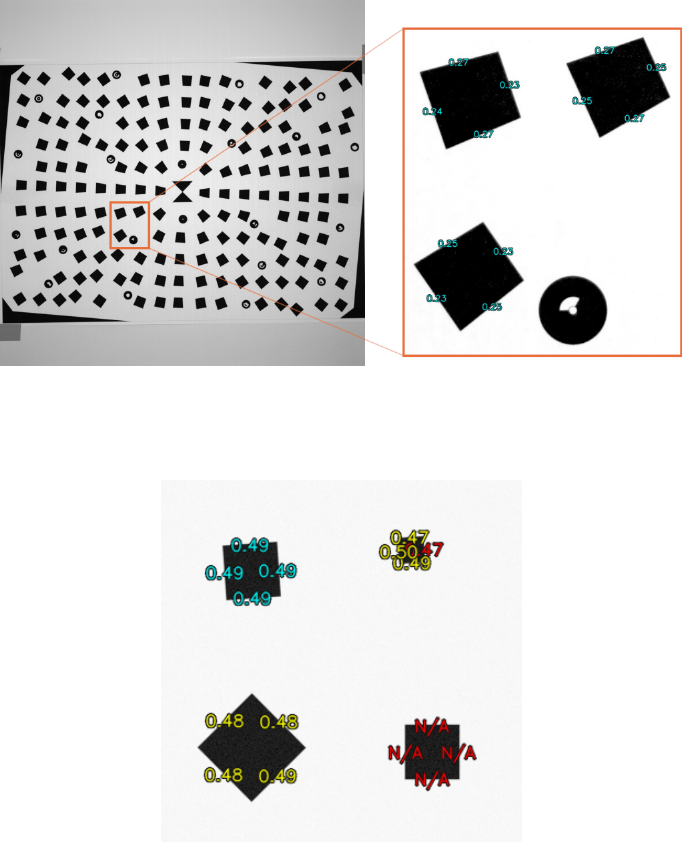
Figure 1: Left: A sample image of a printed MTF Mapper “lensgrid” chart. Right: A close-
up crop of the output produced by MTF Mapper. The Cyan numbers indicate the MTF50
value of each edge in cycles per pixel.
Figure 2: Examples of some of the conditions that affect the colour of the annotation text.
Ideally, all your annotations should be Cyan.
1.2 MTF surface images
Derived from the same input images as used to produce Annotated images, the MTF50 surface
images are a colour representation of your MTF50 values measured across your camera’s
sensor.
Note that MTF Mapper’s output is split into meridional and sagittal plots; the main reason
for this is that most cameras have distinctly different performance along the meridional and
sagittal directions. The sagittal MTF50 values are derived from edges that are oriented along
radial lines (with respect to the centre of the image), and the meridional MTF50 values come
from the other edges, that are oriented to be tangential to a circle centred at on the image;
see Figure 4.
4
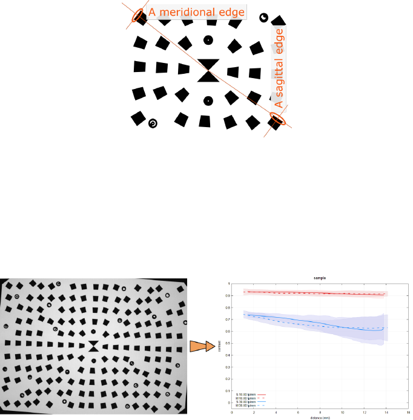
Figure 3: Left: A sample image of a printed MTF Mapper “lensgrid” chart. Right: MTF
Mapper’s “grid” output, which is a 3D plot of MTF50 values (as the height) across the image.
Figure 4: Meridional vs Sagittal directions.
1.3 Lens profile MTF plots
MTF Mapper can produce plots that are similar to those produced by lens manufacturers,
which show contrast plotted as a function of distance from the lens centre, at a few selected
spatial resolution choices.
Figure 5: Left: A sample image of a printed MTF Mapper “lensgrid” chart. Right: A lens
MTF profile, showing contrast at 10 lp/mm and 30 lp/mm as a function of distance from
the centre of the lens, for both the meridional and sagittal directions.
5
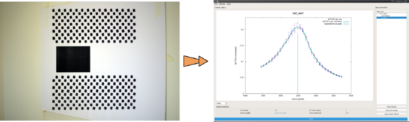
Note that MTF Mapper’s lens profile plots cannot exactly reproduce the MTF plots published
by the lens manufacturer, mostly because MTF Mapper measures system MTF, which is a
combination of lens MTF and the camera sensor’s MTF. Also note that some manufacturers
publish theoretical rather than measured MTF. Having said that, the shape of MTF Mapper’s
lens profile plots should be similar to the manufacturer’s plot, but the absolute contrast value
will be somewhat lower.
1.4 Profile data sets / Autofocus fine-tuning
This particular MTF Mapper output is specifically designed to work with a 45◦test chart,
like MTF Mapper’s “perspective” chart type. The details on using this method to adjust
DSLR autoforcus fine-tuning are discussed in Section 6.
Figure 6: Left: A sample image of a printed MTF Mapper “perspective” chart. Right:
MTF50 values plotted as a function of distance.
The vertical blue line in Figure 6shows the location of the edge used for AF, and the green
curve shows the sharpness in relation to this edge, i.e., we can infer from this plot that the
camera AF has been successfully adjusted in this example.
6
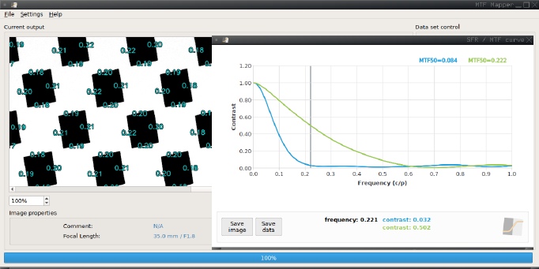
1.5 Plots of SFR curves (or MTF curves)
Derived from the same input images as used to produce Annotated images, MTF Mapper can
plot the SFR curve (or the MTF curve, if you prefer) of a given edge by interactively selecting
the edge within the GUI by clicking on the Cyan text annotation. By holding shift while
left-clicking on the edge, up to three different edges can be selected and plotted together;
you can even select all three images from different Annotated image outputs to compare, say,
the same test chart edge across different aperture settings of the lens.
Figure 7: Two edges have been selected. One is slightly out of focus, the other sharper,
The pop-up window displays the SFR curves for both of these edges by plotting contrast vs
frequency.
Note that even though the example presented in Figure 7relied on the GUI to perform the
edge selection, the actual SFR data of any edge can readily be extracted using the command
line version of MTF Mapper for batch processing.
7
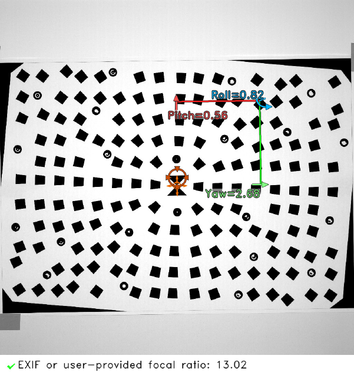
1.6 Checking test chart orientation
Most of the MTF Mapper outputs rely on setting up the chart to be perpendicular to the
optical axis of the lens, or put differently, you want your camera’s sensor to be parallel to
the test chart. If your test chart is not perfectly parallel to the sensor, it might appear that,
say, the right side of your lens appears soft (e.g., it would look a little like the MTF surface
shown in Figure 3). You can only really say that the right side of the lens is in fact soft if
you have confirmed that your set-up is good.
There are many different methods of aligning your test chart; the simplest method is to
hold a small mirror flat against the centre of the test chart: if your camera can see itself
looking back, you are close. Another approach is to use the built-in “chart orientation” option
provided by MTF Mapper. This absolutely requires a “lensgrid” style test chart, since MTF
Mapper looks at the circular fiducial patterns to measure the chart orientation. Figure 8
shows the output: you ultimately want to bring the yaw and pitch angles down to below 1◦,
the lower the better. We can clearly see that the yaw angle is about 2.68◦to the right, so in
this case it is more likely that the lens is fine (no tilted elements), but rather that the set-up
has to be adjusted slightly.
Figure 8: Sample chart orientation output. As indicated by the 2.68◦yaw angle, this chart
is tilted so that the right side of the chart is sligthly further from the camera compared to
the left side.
8
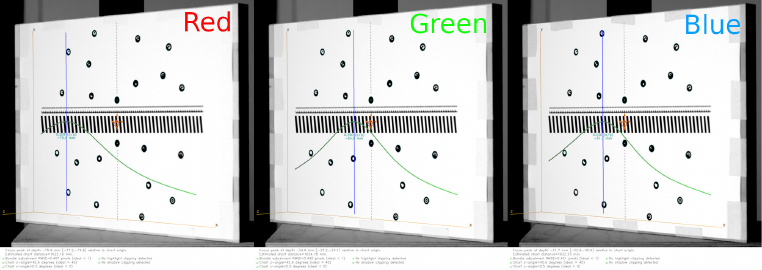
1.7 Measure the exact focus position (per colour subset if you want)
MTF Mapper can also measure the exact focus position of your camera. If this sounds odd to
you, you might be onto something. Normally one would expect focus position to be handled
either by the autofocus mechanism, or by the photographer. However, if you have a manual
focus lens and you want to adjust the focus distance to an exact value, perhaps in some
machine vision application, then MTF Mapper can help.
Figure 9: From the “focus” type MTF Mapper chart, mounted at a 45◦degree angle, MTF
Mapper can directly measure the depth-of-field curve (which was drawn back onto the test
chart image in green), which also gives you the distance of best focus (blue line).
MTF Mapper can be used to measure focus shift in object space, measuring the exact shift
in millimetres. Figure 9shows MTF Mapper’s Focus position output. The amount of focus
shift on stopping down the lens is measured as the difference between the two focus position
measurements: one captured with the lens wide-open, and another image with the lens
stopped down without adjusting focus.
We can also measure longitudinal chromatic aberration by processing a single image three
times with MTF Mapper, each time using a different R/G/B Bayer channel. Figure 10
demonstrates this by displaying the three output images side-by-side. More information on
the focus output type can be found in Section 5.5.
9
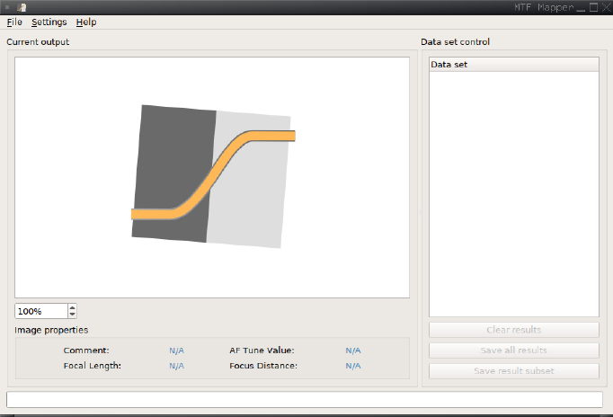
Figure 10: Example of longitudinal chromatic aberration. The same raw image was processed
by MTF Mapper three times, each time using only the indicated colour subset of the sensor’s
Bayer filter. Notice how much further back the red channel is focussed, relative to the green
and blue channels.
1.8 Command line version outputs
The bulk of MTF Mapper is implemented as a command-line utility, which makes it suitable
for scripted / batch operation. In fact, the only functionality that is exclusively found in the
GUI is the ability to automatically call dcraw to convert raw camera image formats, and the
ability to produce a plot of a single SFR curve (see Section 1.5).
In addition to producing all the graphical outputs described above, the command-line utility
can create a number of text files containing useful measurements, e.g., a file giving the
coordinates of an edge together with its MTF50 value, or a file giving the coordinates of an
edge together with the full SFR curve data.
10
2 Getting started with the GUI
2.1 Main window
After launching the GUI, you will be faced with a screen that looks like the one portrayed
in Figure 11.
Figure 11: Screen shot of the MTF mapper gui
The first thing you probably want to do is open up a file (or multiple files) by choosing
File/Open from the menu bar. That gives you the dialog depicted in Figure 12. Input files
can be in a variety of image formats, including .tif, .png, .jpg, .pgm, or any raw for-
mat supported by dcraw, including .nef, .cr2, .pef, .arw, .orf, .rw2, .dng, .iiq,
.mos, and maybe more.
You may notice that there are two additional Open options, namely Open single edge image(s),
and Open Focus Position image(s). These two entries are used to open very specific type of
images, which are discussed in Section 7and Section 5.5 respectively. Unless you are dealing
with these specific image types, use the plain File/Open option.
11
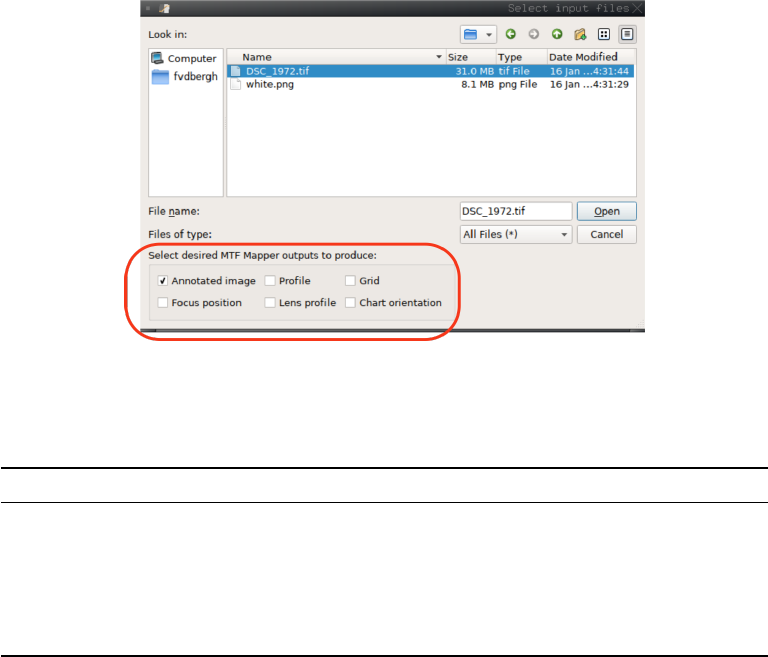
I have drawn a red rounded rectangle on top of the screenshot to highlight the output selection
options — these correspond loosely to the subsections of Section 1above. There are several
test charts (see Section 4) used by MTF Mapper, and not all of them will work with all the
output types. Table 1summarizes the combinations that are supposed to work.
Figure 12: The File/Open dialog.
Table 1: Combinations of output types and chart types that should work
Output type Compatible chart types
Annotated image lensgrid, grid, perspective, user defined
Profile perspective
Grid lensgrid, grid, perspective (not recommended), user defined
Lens profile lensgrid, grid (not recommended)
Focus position focus, mfprofile
Chart orientation lensgrid, focus (not recommended)
As you can see, the Annotated image output is the most flexible, and will work not only with
most of the MTF Mapper test charts, but also with any user-provided test chart that contains
black rectangles (actually, most convex quadrilaterals) on a lighter background. It should
work with ISO 12233:2014 E-SFR test charts (both standard and enhanced versions), but not
with the older ISO 12233:2000 test charts, nor with DPReview’s test charts. It is possible to
crop out sections of the latter two, which will work with MTF Mapper (see Section 7).
12

Figure 13: Selecting an output to view.
Ok, back to the file dialog. After you have selected your input file (or multiple files with shift-
click or ctrl-click), and the desired output types, click the Open button to start processing.
You should see some entries appear in the Data set tree-view list after a while. Each entry
that successfully produced output can be expanded by clicking on the symbol to the left of
the entry (the symbol is a triangle in QT5 on Linux). In Figure 13 I expanded the entry of
a file called crop white and selected the sub-entry called annotated (highligthed by the red
box).
You can see the Annotated image output being shown in the Current output panel; if the
image dimensions exceed the window size, then the initial display scale of the image will be
chosen so that one of the image dimensions fills the window either horizontally or vertically.
You can drag the image in the output window to pan (while holding down the left mouse
button), or you may choose to use the scroll bars. You may also use the mouse wheel to pan
vertically, or hold down the shift key while scrolling the mouse wheel to pan horizontally. You
can zoom in and out by holding down the control key while scrolling the mouse wheel, but
note that the maximum magnification factor is 2×. If the image is smaller than the window
size, zooming is disabled. Lastly, you can also zoom by holding down the right mouse button
while moving the mouse up/down, or by clicking with any mouse button on the image to set
the point around which you want to zoom, followed by pressing the “+” or “-” keys on the
keyboard.
At the bottom of the Data set control panel you will see three buttons that can be used to
either clear or save all the results currently displayed in the Data set list.
The last panel of the main window can be found in the bottom-left corner: the Image properties
panel. Most of the fields are self-explanatory, but I should note that these fields are populated
purely from the EXIF fields of your image, if present. In particular, the ‘Focus Distance’
property is that reported by the camera, and is not measured by MTF Mapper.
One last thing to note: the size of the output plots/charts is determined by the size of the
main MTF Mapper window. If you maximize the window before you open/process input
files, then the plots shouls scale to fill the window, which should help on very high resolution
monitors.
13
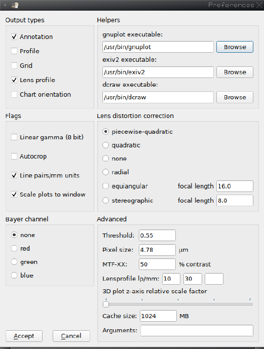
2.2 The preferences dialog
The Settings/Preferences dialog is shown in Figure 14. The first panel we encounter (top left)
looks rather familiar; indeed, this Output types panel just a copy of the output types options
encountered in the File/Open dialog. The main difference is that the output types selected
in the Preferences dialog are saved between MTF Mapper runs, and will be used to fill the
corresponding output type options in the File/Open dialog next time you run MTF Mapper.
Figure 14: The preferences dialog.
The top-right panel, Helpers, is rather uninteresting unless you want to use a custom version
of dcraw. Normally, you can safely ignore this panel.
The middle-left panel, Flags, contains a few optional flags that can be set to alter MTF
Mapper’s behaviour. Briefly,
Linear gamma: This option should be off by default. Most 8-bit images (e.g., JPEGs) will
be encoded with a particular gamma scheme; you can tick this box if you are certain
that your 8-bit input images are linear.
Autocrop: Automatically trim off a darker background border around your image before
the actual MTF Mapper processing begins. This is purely a speed optimization that
works well if the image circle of your lens is smaller than your sensor. Which happens
very rarely. Alternatively, if your test chart does not fill the image, and the background
behind your test chart is dark enough, this option may also speed up processing a bit.
If unsure, rather leave it off.
Line pairs/mm units: This option (off by default) is used to switch MTF Mapper’s output
14
units from the native cycles/pixel units to line pairs/mm. Turn this setting on if you
want your ‘Lens profile’ outputs to use the normal conventions, where resolution is
expressed in lp/mm. NB: if you turn on this option, then the ‘Pixel size’ field in the
Advanced panel of the Preferences dialog must be set to the correct pixel pitch of your
sensor. If you use my default ‘Pixel size’ of 4.78 micron, you are only going to be happy
with the result if you have a Nikon D7000.
Scale plots to window: As previously mentioned, the varous chart/plot outputs produced
by MTF Mapper will be scaled to fill the main window if this option is turned on (as
it is by default). You can safely leave this on.
The bottom-left panel, Bayer channel, is a lot more powerful than its unassuming appearance
might lead you to believe. If the ‘None’ option is selected, then your input image will be
converted to a grayscale image before the main MTF Mapper processing starts. Nothing
(much) will happen if your input image was already a grayscale image. Things get a little
more interesting if your input image is a raw camera format: with ‘None’ selected, your
raw image will be demosaiced with the AHD algorithm implemented in dcraw to produce a
16-bit linear RGB image, which MTF Mapper will then promptly convert to a 16-bit linear
grayscale image. The conventional luminance conversion with a 0.299R + 0.587G + 0.114B
weighing is employed. The implication is that MTF Mapper will report on the MTF values
of the luminance channel of your RGB images if you leave the Bayer channel option set to
‘None’.
If you choose a different Bayer channel option (‘red’, ‘green’ or ‘blue’) and your input image
is a raw camera file, then two things happen:
1. dcraw is instructed to produce un-demosaiced output, i.e., dcraw’s “-d” option, and
2. MTF Mapper will compute MTF values using only the selected Bayer colour subset.
The result of this is that no demosaicing algorithm interferes, meaning that we can measure
the MTF of the lens at the chosen wavelength subset. (Strictly speaking, you would still
have to remove the photosite aperture MTF to really obtain the lens MTF, but you get the
idea.) This approach gives us the most accurate method of measuring effects like longitudinal
chromatic aberration, or any other phenomenon that could cause the demosaicing algorithm
to inadvertently mix the MTFs of the different wavelength subsets (e.g., Red, Green, or
Blue).
NB: Just keep in mind that only 25% of the photosites of the sensor will be red or blue, so
it is prudent to use a longer edge for your MTF analysis. Normally, I would recommend an
edge length of at least 60 to 80 pixels for grayscale images (or the luminance image MTF
Mapper derives from a demosaiced RGB image), but you should increase that (perhaps by
using a larger test chart) to at least 200 pixels for the red and blue Bayer channels.
NB: The default Bayer CFA pattern is RGGB. If your sensor uses a different pattern (rather
unlikely) you can add --cfa-pattern bggr (or whatever your pattern is) to the ‘Arguments’
field in the Advanced panel of the Prefences dialog. See Appendix Cfor all the supported
CFA patterns.
The middle-right panel, Lens distortion correction, deals with methods to work around lens
distortion. Although MTF Mapper supports multiple lens distortion correction methods, one
should keep in mind that the impact of lens distortion on slanted-edge MTF measurements is
dependend on the length of the edges. Most MTF Mapper test charts feature relatively small
targets (the black rectangles / trapezoids), so the impact of lens distortion will be relatively
small. Having said that, the default is for MTF Mapper to use a ‘piecewise-quadratic’ to
model each edge, which should compensate for severe lens distortion on very large targets
without any meaningfull loss of accuracy. This method is suitable even when using fisheye
lenses. Section 8covers this topic in more detail.
15
The bottom-right panel, Advanced, covers a mixed bag of options.
Pixel size: The ‘Pixel size’ field is almost self-explanatory; this field must be set to your
sensor’s pixel pitch, expressed in micron (micrometre) units. This field must be set to
the correct value if the ‘Line pairs/mm units’ option is selected in the Flags panel; if
that flag is disabled, then the value of the ‘Pixel size’ field is irrelevant, and will not be
used by MTF Mapper.
Threshold: The most mysterious option in MTF Mapper is the ‘Threshold’ field. To un-
derstand what this parameter does, one has to consider how MTF Mapper operates.
The first step in MTF Mapper’s processing is to threshold the (grayscale) image so
that the dark targets (e.g., black rectangles) are separated from the lighter background
of the test chart. This thresholding step is locally adaptive, but it is still controlled
by a threshold parameter (between 0.0 and 1.0) to select just how dark an object has
to be relative to its surroundings. The default value of 0.55 should work well for most
properly-exposed images, provided that the test chart fills most of the image.
But occasionally this will fail. Consider the case where you have set up your test chart
indoors, with the field of view adjusted to include the whole test chart, with just a little
bit of the background showing around the chart. If this background scene happens to
include a light source that is much brighter than the white part of the test chart, then
that light source will ‘contaminate’ the nearby part of the test chart, causing MTF
Mapper to not detect the black targets (rectangles) there. In other words, the classic
symptoms would be that only some of the black targets are correctly annotated in the
Annotated image output. The first (and best) solution would be to not have a bright
light source in the frame. The other potential solution is to decrease the ‘Threshold’
value until all the black targets are successfully detected. Starting from the default
value of 0.55, drop down to 0.4, 0.3, and maybe down to 0.2 if necessary.
You might wonder why I do not just set the default value to 0.3. Well, you could have
the opposite scenario where you have spurious dark objects in the background that
happen to be rectangular enough for MTF Mapper to detect. The default value of 0.55
is a reasonable balance between these two extremes, and works well enough until it
doesn’t, in which case you can decrease it. Simple enough, right?
3D plot z-axis relative scale factor: Old versions of MTF Mapper (0.4.x and earlier)
would plot the Grid output (as illustrated in Figure 3) scaled so that the minimum
MTF50 value would be treated as the zero reference for both the z-axis height of the
3D MTF surface, and the colour scale for both the 3D surface and 2D MTF image.
This has the unintended consequence of magnifying even tiny differences, should your
lens behave very uniformly across the field. It also means that it is hard to compare
two different plots, since the MTF50 scale can vary a lot between, say, f/1.4 and f/5.6.
In the 0.5.x MTF Mapper versions, the zero reference was always fixed at, well, zero.
The downside of this approach is that you could not see small deviations in an otherwise
very uniform performance across the field.
The solution, as implemented in versions 0.6.x upwards, is to leave the choice to the
user. Setting the ‘z-axis relative scale factor’ slider all the way to the left gives you the
version 0.5.x beviour (zero is 0.0), and setting the slider all the way to the right gives
you version 0.4.x behaviour, like so:
16
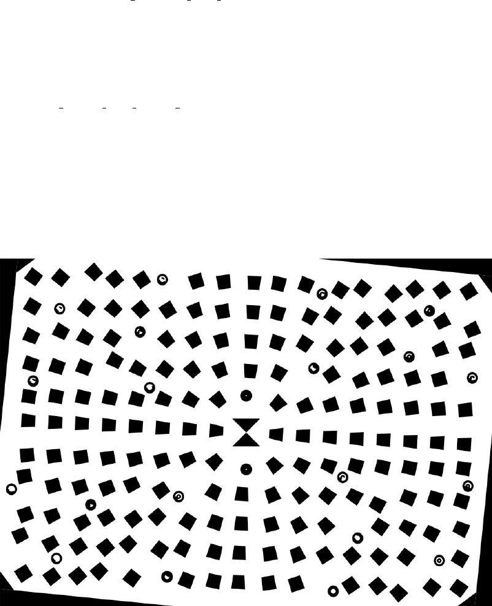
Cache size: MTF Mapper will keep recently viewed images (including any output listed in
the Data set panel) in memory to avoid the delay in re-reading and decoding the images
when you rapidly switch between them. This parameter controls how much memory
(RAM) may be used for storing images; setting this value to 1 MB (the minimum)
effectively disables the cache. Adjust to taste.
Arguments: This field gives you the opportunity to pass additional options to the MTF
Mapper command-line tool, thus you can obtain behaviour that is not (currently)
exposed in the Preferences dialog. See the MTF Mapper command-line tool manual
page (in Appendix C) for a comprehensive list of available options. For example, if
you have cropped out a single edge of an incompatible test chart, e.g., the DP Review
studio test chart, then you can add the option --single-roi to the ‘Arguments’ field
to obtain the desired behaviour with, say, the Annotated image output; now you can
click on the edge in the Annotated image to display the SFR curve, for example.
If you find yourself using the ‘Arguments’ field often, let me know and I can try to
extend the Preferences dialog to include the option you require.
Note that the contents of this field is not saved between MTF Mapper sessions.
17
3 Supported file types
MTF Mapper is able to process a wide variety of image formats. The command line utility
can process at least .tif,.png,.jpg,.ppm,.bmp and .pgm files, and probably a few more
formats supported by OpenCV.
In addition to these, the MTF Mapper GUI adds support for automatic conversion of raw
image formats using dcraw to perform the conversion. At the time of writing, the GUI will
recognize the following raw file extensions: .NEF,.CR2,.ARW,.PEF,.IIQ,.MOS,.ORF,.RW2,
and .DNG. If you have a specific format supported by dcraw that I missed, let me know and
I will add it!
As of version 0.6.15, MTF Mapper understands both ICC colour profiles, as well as the two
colour spaces supported by JPEG files via Exif tags (sRGB and Adobe RGB). The slanted-
edge method that MTF Mapper relies on only works on ‘linear light’ images, meaning that
MTF Mapper will undo any non-linear mapping (sometimes referred to as gamma correction)
associated with the file format / colour space combination for .tif (TIFF) and .jpg (JPEG)
and .png (PNG) files. The following list summarizes how MTF Mapper deals with non-linear
images:
1. If you open a raw camera file with the GUI, then MTF Mapper will use dcraw to
produce a linear 16-bit RGB image. This is the most accurate method. (Note: the
command-line mtf mapper tool does not automatically render raw camera files — you
have to use dcraw or some other converter)
2. If you open a TIFF file, a PNG file, or a JPEG file (GUI or command-line) with an
embedded ICC profile, then MTF Mapper will convert the image to a linear represen-
tation using the profile’s Tone Reproduction Curve. This applies to both 8-bit and
16-bit TIFF and PNG files.
3. If you open a JPEG file with some embedded Exif metadata, then MTF Mapper will
determine (well, guess) whether the JPEG file is in the sRGB or Adobe RGB colour
space, and apply the appropriate transformation to linearize the image.
4. If your JPEG file has no Exif tags, or does not contain the Colour Space tag, then
MTF Mapper will assume the file is encoded in the sRGB colour space.
5. If your image is in any other format (e.g., BMP or PNM), then MTF Mapper will
assume that 8-bit images are encoded in the sRGB colour space (but you can override
this with the -l option), and that 16-bit images are linear.
If you want to play safe, use a TIFF/PNG/JPEG file with an embedded ICC profile. That
takes care of linearizing the data. What about colour? Well, the slanted-edge algorithm only
operates on grayscale images, or one colour channel at a time. MTF Mapper will transform
an RGB image (after linearizing the values if necessary) to a luminance image, i.e., it performs
a CIE RGB-to-XYZ conversion and keeps the Y channel.
If your image contains an ICC profile, then MTF Mapper will use the embedded RGB-to-XYZ
matrix which (according to the ICC specification) is already adapted to a D50 illuminant.
If your image is a JPEG file, then the D50-adapted matrix for either sRGB or Adobe RGB
will be used, as appropriate. For all other file types, the D50-adapted sRGB matrix will be
assumed.
18

4 Chart types
MTF Mapper comes with a few custom test chart designs to fully realize its potential. These
charts can be partitioned into the perpendicular and 45◦families. All these charts can be
generated using the mtf generate test chart utility bundled with MTF Mapper. This is
a command-line only tool; see Appendix Cfor a full description of its options. The tool
produces output charts in the SVG vector format, which can be opened and edited with the
Inkscape program (and probably many others).
As an alternative, I keep a .zip file with a couple of charts already converted to .pdf format
on the MTF Mapper project on SourceForge. Go to https://sourceforge.net/projects/
mtfmapper/files/?source=navbar, and look for a file called
mtfmapper sample test charts xyz.zip,
where xyz will change whenever I update the archive.
4.1 Perpendicular chart family
These charts are designed to be used so that the test chart is parallel to the camera’s sensor,
or equivalently, that the optical axis of the camera is perpendidicular to the test chart.
4.1.1 lensgrid
This chart type is well-suited to most MTF Mapper output types, including Annotated,Grid,
Lens profile and Chart orientation,but not the Profile output type. The particular shape of
the targets, ranging from trapezoids to squares, are specifically chosen to ensure that the
edges are either purely radial or tangential in their orientation, provided that the camera is
centered on the chart. Many thanks to Bernard Delley who proposed this type of chart on
the DP Review forums.
A quick word on slanted edge orientation is in order. If you have used Imatest in the
19

past, or you are familiar with the ISO 12233:2000 standard, then you might wonder about
the validity of MTF Mapper’s test charts containing edges that are clearly not placed at
a 5◦angle. The short version is that extensive testing using both simulated imagery and
captured imagery shows that the slanted edge method works just fine when applied to edges
that are not oriented at 5◦(see [1], but I have also independently performed these tests, e.g.,
http://mtfmapper.blogspot.co.za/2015/06/anisotropy.html).
In addition to the slanted edge targets, the chart also features a number of circular fiducial
patterns. These patterns are not used in MTF measurements, but are used when automatic
chart orientation measurement is performed (see Section 1.6). If you plan on using the chart
orientation feature, be sure to print the test chart at the correct size; if you closely compare
the A4 and A3 lensgrid charts (for example), you will notice that the circular fiducial codes
are different. I also recommend that you print the charts without any ‘fit-to-page’ options.
The accuracy of the chart orientation estimate depends on MTF Mapper being able to trust
that the real-world distance between the circular fiducial patterns are correct for a given
chart size.
4.1.2 grid
This chart type is provided for backwards compatibility, but I strongly recommend the use
of the lensgrid chart instead.
4.2 45◦chart family
These charts are designed to be used such that the test chart is oriented at a 45◦angle to
the camera’s optical axis (or sensor, for that matter) in either the pitch or yaw directions.
Actually, there is no reason why these charts cannot be used at some other angle, e.g., 30◦;
rather consider that 45◦is a good starting point if you do not know exactly how much
depth-of-field to expect.
20

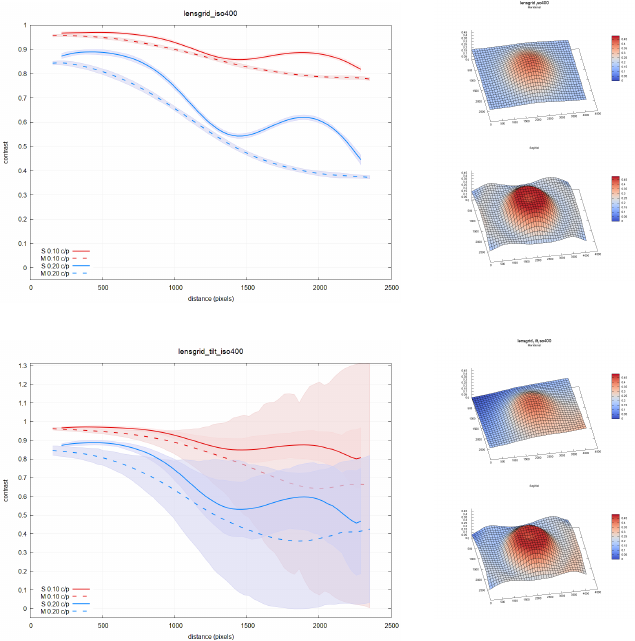
4.2.2 focus
This chart type is intended to be used with the MTF Mapper Focus position output type,
which can only be selected by choosing File/Focus Position image(s) from the File menu in
the GUI. Trying to produce other MTF Mapper output types using this test chart is not
recommended.
22

4.2.3 mfperspective
This chart type is intended to be used with the MTF Mapper command-line output option
--mf-profile. Trying to produce other MTF Mapper output types using this test chart is
not recommended. At the time of writing, this chart and related output type are considered
experimental, and may potentially change in the future.
23

5 Additional details on how to use the output types
5.1 Lens profile MTF plots
Section 1.3 briefly introduced this output type. As a first step, it is critical to ensure that
the test chart is set-up to be parallel to the image sensor, or equivalently, that the test chart
is perpendicular to the optical axis of the camera. The reason for this strict requirement is
clear when one considers how MTF Mapper derives the Lens profile plots.
First, MTF Mapper assumes that the image centre is positioned to coincide with the test
chart centre (the bow-tie). Next, it averages all the MTF measurements (contrast at a given
spatial frequency) at the same radial distance from the centre of the chart, grouping the
edges into the sagittal / meridional orientations along the way. MTF Mapper also estimates
the spread of the measurements at that radial distance by computing the standard deviation
of the samples. Clearly, if the test chart is tilted badly in the left-to-right direction you will
end up averaging across measurements that are in focus, behind the focal plane, and ahead
of the focal plane. This effect will become more pronounced towards the edges of the test
chart.
(a) Lens profile, no chart tilt
(b) MTF50 surface, no
chart tilt
(c) Lens profile, simulated chart tilt
(d) MTF50 surface, sim-
ulated chart tilt
Figure 15: What happens when my chart is tilted slightly?
Figure 15 illustrates this effect using some simulated imagery. Notice that although the
general shape of the MTF curves have been preserved (the solid and dashed lines in Fig-
ure 15(a) and (c)), we see a massive increase in the observed spread of the measurements
(the red/blue shaded parts). The simulated amount of tilt is perhaps a little excessive, but
it should give you an idea of how to recognize tilt in a Lens profile plot. Without further
24

information (e.g., performing a chart orientation measurement) it is not really possible to
distinguish from Figure 15(d) whether the chart is tilted (poor set-up), or whether the lens
has a tilted element.
Another important aspect when using MTF Mapper to generate Lens profile plots is to choose
the resolution units you want. By default, MTF Mapper does not know the physical pixel
pitch (size) of your sensor, and this information is not reliably recorded in any EXIF tags.
Thus, if you want to produce a Lens profile plot using the typical 10 lp/mm and 30 lp/mm
spatial resolutions, then you must set the ‘Pixel size’ (in the Advanced panel of the Preferences
dialog) to the correct value, in micron. You must also tick the ‘Line pairs/mm units’ box in
the Flags panel.
Figure 16: You can specify up to three different spatial resolutions for Lens profile outputs.
If you want to plot the contrast at a different spatial resolution, e.g., 50 lp/mm, then you can
explictly tell MTF Mapper which resolution to use by adding --lp3 50 to the ‘Arguments’
field of the Preferences dialog. This will add a third curve for 50 lp/mm to the output. You
can override the default resolutions chosen for the first two curves with by entering --lp1
20 --lp2 40 into the ‘Arguments’ field. See Figure 16.
5.2 Profile data sets / Autofocus fine-tuning
Using the perspective test chart illustrated in Section 4.2.1, the program will construct a
profile such as the one shown in Figure 17. The chart should be photographed at a 45◦angle,
preferrably at the specified distance for that chart size. Each chart is optimised for a specific
viewing distance to counter the effects of perspective distortion, and the chart should be
tilted such that the ‘big end’ of the chart is the one that is further away from the camera.
The large central block in the test chart is called the reference block, and the edge of this
block closest to the centre of the chart is called the reference edge. The MTF50 values
computed across the edges of all the blocks in the image are projected onto the y-axis1of
the image, thus forming a new set of data points of the form (y-value, MTF50 value). This
process is illustrated in Figure 18. The idea is that about half of the chart will be in front
1MTF Mapper will auto-detect the orientation of the image. For ease of discussion, this is called the
y-axis.
25
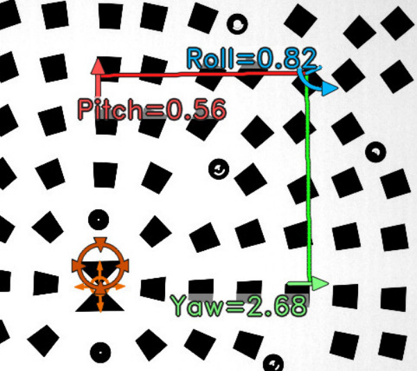
0
0.05
0.1
0.15
0.2
1000 1500 2000 2500 3000 3500 4000
MTF50 (cycles/pixel)
column (pixels)
MTF50 (c/p) raw
MTF50 (c/p) smoothed
Expected focus point
Figure 17: Example of profile generated by MTF mapper.
0
0.05
0.1
0.15
0.2
0.25
0.3
0.35
0.4
800 1000 1200 1400 1600 1800 2000 2200 2400
Figure 18: How the profile is constructed: MTF50 values are collapsed horizontally onto the
y-axis to form the profile.
of the plane of focus, and the other half behind. If the depth of field is sufficiently shallow,
then the closest and furthest of the small blocks will be noticeably blurry. By projecting
the measured sharpness value (MTF50) of each block along horizontal lines (Figure 18), we
obtain a roughly bell-shaped profile as shown in green on the left. The peak of this curve
corresponds to the plane of focus, and blocks that are further or closer than this plane are
out of focus to some degree. The blue line indicates the position of the reference edge.
A complete profile in its usual orientation is shown in Figure 17. The red dots represent
individual MTF50 measurements, and the green curve is merely a smoothed representation
of the same data.
Generally, Profile mode is only intended to be used to calibrate or evaluate the autofocus
sensor of a DSLR; the details of this process are described in Section 6. The objective is to
26
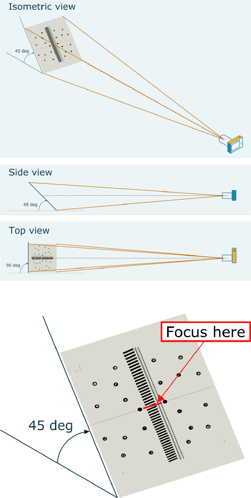
adjust the camera so that the blue line (reference edge, or focus position) lines up with the
peak of the green curve / red point cloud. If the blue line is far from the peak, then you are
experiencing either front- or back-focus. If your chart was positioned at a 45◦angle so that
the bottom edge was closer to you, then front focus would mean that the blue line appears
to the left of the peak in the green curve. This depends on the orientation of the camera,
though, so you may want to take a look at the Annotated image (see Section 1.1) to orient
yourself. The trick is to remember that the peak in the green curve (or red point cloud)
corresponds to the actual plane of focus, whereas the blue line corresponds to where MTF
Mapper assumes you have placed the autofocus sensor when you framed the shot.
5.3 Plots of SFR curves (or MTF curves)
Figure 19: Two edges have been selected. One is slightly out of focus, the other sharper.
The pop-up window displays the SFR curves for both of these edges by plotting contrast
vs frequency. The two coloured dots drawn over the selected edges in the annotated image
correspond to the colours used to plot the SFR curves.
A brief description of this output type is given in Section 1.5. The following points should
be noted regarding this output type:
1. Left-clicking on the MTF50 text labels (usually Cyan in colour) of the Annotated image
displayed in the Current output panel of the main MTF mapper will cause a new SFR
curve window to pop up, or will cause the current SFR curve window to be replaced;
2. Holding the shift key while left-clicking on the MTF50 text labels will cause additional
SFR curves to be added to the current SFR curve window. You can select these
additional edges from any of the Annotated image outputs in the Data set list, e.g., you
can select the same edge from two images captured at different aperture values, or with
different lenses, and directly compare their SFR curves.
You could even process a single raw image three times with different Bayer channels
selected, and compare the SFR curves of the three channels using this technique.
If the window already contains three curves, shift-clicking will overwrite the last curve
added to the SFR curve window;
3. MTF Mapper draws coloured dots on the Annotated image output to indicate which
edges are being plotted in the SFR curve window;
4. The SFR curve window supports the display of the full SFR curve, i.e., by adding the
--full-sfr option to the ‘Arguments’ field of the Preferences dialog before opening the
27
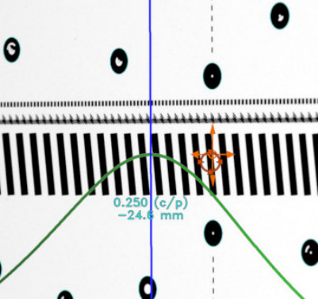
input files for processing, the SFR curve will be displayed up to 2.0 cycles/pixel (the
default is 1.0 cycles/pixel);
5. The ‘Save data’ button of the SFR curve window (see Figure 7) will save the currently
displayed SFR curves to a CSV file. If multiple curves are displayed, then they will
form additional columns in the output CSV file;
5.4 Checking test chart orientation
A brief overview of this output type is presented in Section 1.6. A close-up of the output
image is shown in Figure 20. The centre of the printed test chart is defined as the point
where the tips of the two black triangles touch, in the shape that resembles a bow-tie.
After successfully extracting the test chart coordinate information from the circular fiducial
patterns, MTF Mapper will visualize the chart origin by drawing an orange ‘compass rose’
on top of the output image.
The second important marker symbol, a red circle with four inwards-pointing triangles, is
drawn at the location of the image sensor centre (see Figure 20). This marker should ideally
be close to the orange compass rose, thus serving as a visual indicator of how well the test
chart was centered in the camera frame, but it does not have to be spot-on.
Figure 20: A close-up of the chart orientation output. This is a crop of Figure 8.
The three Tait-Bryan orientation angles (yaw, pitch and roll) are also rendered in colour on
top of the output image. Each rotation is indicated by a short arc ending in an arrow; this
arrow points in the direction of the observed rotation, so corrections must be applied in the
opposite direction. Aim to reduce all three the angles to below 1◦.
Note that MTF Mapper can only estimate the chart orientation accurately if it knows the
focal ratio of the camera. The focal ratio is simply defined as focal length (in mm) divided
by sensor width (in mm). MTF Mapper will attempt to extract this information from the
EXIF tags in the image, but not all camera hardware will provide the relevant tags. In that
28
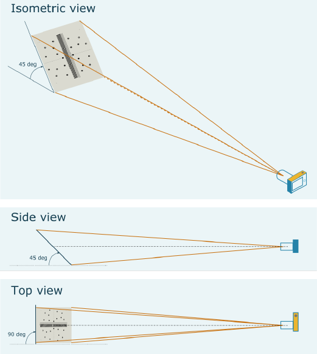
case, it is necessary for the user to provide this information using the --focal-ratio option,
which can be added to the ‘Arguments’ field of the Preferences dialog of the GUI.
Keep in mind that the chart orientation measurement is based on the geometrical projection
of the lens, not on MTF or sharpness. In other words, if your camera sensor is tilted with
respect to your lens mount (someone dropped a camera, perhaps), then the chart orientation
measurement provided by MTF Mapper will allow you to orient your camera such that the
sensor is parallel to the test chart. By looking closely at the Grid output, you should be able
to see whether the plane of best focus is still parallel to the test chart — if not, then either
your sensor or lens mount is tilted, or your lens contains a tilted element. Repeating with a
second lens should reveal the truth.
5.5 Focus distance-, focus shift-, or LoCA measurement
A brief description of the Focus position output type can be found in Section 1.7; this section
covers some important details. Note that since MTF Mapper 0.6.20 this output type can
only be produced by opening the files using File/Open Focus Position image(s), but in older
versions a regular checkbox existed to select this output type.
Figure 21: How to set up the chart relative to the camera.
The focus test chart is intended to be used as illustrated in Figure 21. MTF Mapper measures
the focus position relative to the centre of the chart, meaning that focus should be set (using
manual focus) to the section of the chart indicated in Figure 22. You will notice that there
are some chevron-like patterns down the centre of the chart to facilitate manual focusing;
Live View focussing with magnification is recommended.
The first experiment that you can perform with this MTF Mapper feature is to measure
your own manual-focus accuracy. You capture a number of shots, resetting focus to infinity
beforce re-focusing each time, then use MTF Mapper to measure how close to perfect focus
29
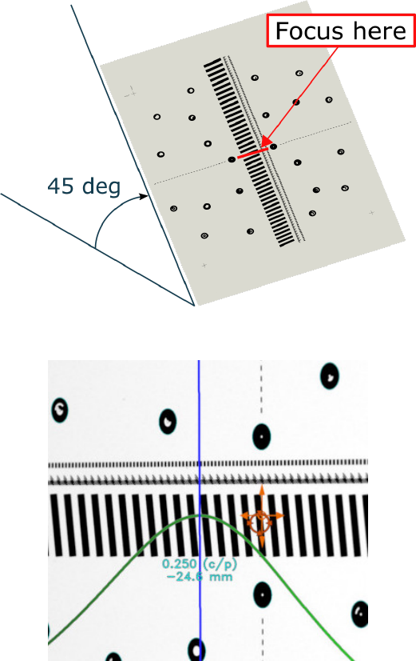
Figure 22: Focus where the red line shows.
Figure 23: The focus error is the value −24.6 mm printed in Cyan on top of the chart image.
you came in each shot. Figure 23 highlights the focus error that you are looking for: the
difference between the point of peak sharpness and the intended focus position (the centre
of the chart). You can tabulate these values using your favourite spreadsheet to see how
repeatable your manual focus technique is.
The red circle with the four inwards-pointing triangles that can be seen in Figure 23 is a visual
indication of the centre of the image, and thus the sensor. This marker should perferably
coincide with the centre of the chart (indicated with the orange compass rose); it just makes
things easier if you aim the camera so that the centre of the sensor lines up with the centre
of the test chart, and then you try to place the focus on the centre of the test chart.
So how does this MTF Mapper output type work? Well, the wide black bars that run down
the centre of the chart are used to measure MTF50, but only on the wide edges of the
bars. Because the camera is centered on the chart, these measurements are all in a purely
meridional orientation, and the tilt of the chart ensures that each bar is at a slightly different
distance from the camera. Actually, MTF Mapper takes multiple MTF measurements along
each of the long edges of these bars to ensure good depth coverage.
30

Once all the measurements are collected, MTF Mapper fits a rational polynomial function to
the MTF50 vs distance samples; this is the green curve seen in Figures 23 and 9. This green
curve is a direct visualization of a Depth Of Field (DOF) curve, but using MTF50 as the
sharpness criterion instead of using a circle of confusion. Although MTF Mapper projects
this green curve back onto the image of the test chart, the actual measurements are available
in a true depth scale (distance from camera) in millimetres.
Note that you can use the Focus position output of MTF Mapper with a normal demosaiced
image, i.e., Preferences/‘Bayer channel’ set to ‘None’, with raw images or JPEGs, to per-
form the focus position measurement on the luma component of your image. This should
correspond to your normal visual perception of sharpness in the image.
5.5.1 Focus shift measurement
You can measure the amount of focus shift your lens experiences on stoping down directly in
object space (or the field, if you prefer that term). First, use manual focus at your camera’s
focusing aperture (usually the maximum aperture of the lens) to adjust your focus until the
focus error (see Figure 23) is small, say, below 10 mm. Then stop down the lens without
adjusting focus, and capture another shot. The difference between the focus error of the
wide-open shot and the stopped down shot will give you a direct measurement of the amount
of focus shift. This measurement will most likely depend on the overall distance from your
camera to the test chart, so choose a chart size that will work at the camera-to-chart distance
you intend to use the lens at most often.
If you find that the focus shift is so extreme that the focus position moves completely off the
test chart, then you could try to tilt the test chart further away from parallel to the sensor.
This should increase the depth range spanned by the chart, and hence bring the focus shift
into range. The downside of this would be a slight decrease in depth measurement resolution.
5.5.2 Longitudinal Chromatic aberration measurement
Similarly to the above recipe for measuring focus shift, first adjust your manual focus position
until the focus error (see Figure 23) is small. Then use the Preferences/‘Bayer channel’
settings to choose the red, green and blue channels, each time using File/‘Open’ to process
the same raw input image in turn. Figure 24 illustrates the results of such an experiment
where we can clearly see that the red channel focuses far behind the blue and green channels
— this happens to be a Nikkor 50 mm f/1.8 AF-D lens shot at f/2.8.
Figure 24: Example of longitudinal chromatic aberration.
31
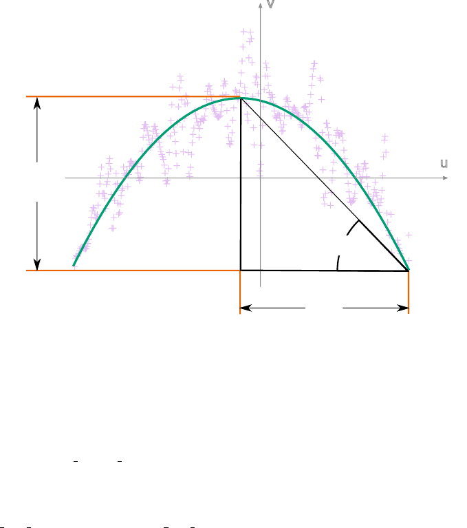
5.6 Useful command line outputs
Although this guide is focused on the features offered by the GUI, it seems like a good place
to document the most useful output offered to command-line users of MTF Mapper. The
option in question is “-q”, which would be invoked as mtf_mapper input.tif out -q. This
output option produces SFR data, MTF50 data, and lens distortion data, distributed over
three output files:
edge mtf values.txt:Each row of the edge mtf values.txt file contains six space-separated
columns: block id edge x edge y mtf50 corner x corner y. The block id can safely be
ignored (it depends on the order in which target squares were processed). The pair
(edge x,edge y) denote the pixel coordinates of the centroid of the edge, and mtf50 is
the MTF50 value in cycles per pixel (default), or in lp/mm if the --pixelsize option
was specified. Lastly, the pair (corner x,corner y) denote the pixel coordinates of the
corner of the target (black square) associated with this edge, and can be safely ignored.
edge sfr values.txt:The format of the edge sfr values.txt file is similar: each row
starts with five columns: block id edge x edge y edge angle radial angle, followed by
64 more floating point values denoting the SFR. The edge angle column denotes the
orientation of the edge relative to the image rows/columns, modulo 45 degrees. This
angle should perferably be at least 2 degrees but less than 44 degrees for best results.
The fifth column, radial angle, is just the angle of the radial line from the image centre
to the edge centroid, thus it can be used to determine whether an edge is in a sagittal
or meridional orientation with respect to the image centre, which is assumed to be
centered on the test chart.
The SFR part (the last 64 values on each line of edge sfr values.txt) represents the
contrast values of the SFR (or MTF, if you prefer) sampled at spatial frequencies of i/64
cycles per pixel for i from 0 to 63 inclusive. You can readily transform these frequencies
to another linear resolution scale, e.g., if your sensor’s pixel pitch is 4.78 micron, then
the frequencies can be scaled so that i/64 ×1000/4.78 gives you a resolution scale in
line pairs per mm.
If you use the --full-sfr option together with -q, the SFR component of each line of
edge sfr values.txt will comprise 128 values (rather than 64), and the corresponding
spatial frequencies are i/64 cycles per pixel for i from 0 to 127 inclusive.
edge line deviation.txt:Each row of the edge line deviation.txt file contains six space-
separated columns: block id edge x edge y slope rise run. The first three, block id edge x
edge y, have the same meaning as in the other files (e.g., edge mtf values.txt). The
interesting columns are, of course, slope,rise and run. Figure 25 illustrates what these
values mean. The figure shows the curvature of an actual edge processed by MTF
Mapper; the purple ‘+’ symbols are individual measurements of the edge location (in
the v-axis) along the length of the edge (the u-axis), and are clearly affected by image
noise. It helps to keep the scale of the axes in mind: the rise value is only 0.06 pix-
els, with the run dimension weighing in at 70 pixels. The green parabola represents a
curve fitted to the raw data. As shown in the figure, the run and rise parameters are
measured on the fitted parabola, rather than the raw data points, to avoid the image
noise. The slope value (and fourth column of edge line deviation.txt) is just the
ratio rise/run.
I have yet to perform a calibration experiments to determine the critical values of the
parameters which would partition edges into curved and not-really-curved categories.
For now, keep in mind that the internal MTF Mapper bin size during ESF construction
is 0.125 pixels, meaning that once the rise parameter exceeds this value, you can be
fairly sure that your edge is curved enough to affect slanted-edge measurements that
do not model edge curvature. Since about version 0.6.10, MTF Mapper will model all
32
edges as curves by default, so the measurements should be accurate even if the edges
are curved.
u
v
run
rise
slope
Figure 25: How edge curvature is measured. Keep in mind that the edge modeled here with
the parabola would look pretty straight in the actual image — it just looks so curved here
because of the high magnification of the v-axis (rise is only 0.06 pixels).
The only reliable, safe way to compare the output of MTF Mapper between different images
captured using the same camera (say, an f/2.8 vs an f/4 image capture) is to use the pixel
coordinates (edge x,edge y) of a measurement from image A to find the closest corresponding
measurement from image B, assuming you do not move around the camera too much, or
rotate the chart or something like that (in which case you can use the Monkres assignment
algorithm to calculate the correct pairing). Please do not rely on the order of the rows of the
edge mtf values.txt and edge sfr values.txt files.
33

6 Autofocus fine-tuning
6.1 The method
The following steps can be used to calibrate the autofocus fine-tuning of a DSLR:
1. Figure 26 illustrates the basic set-up. The distance dis the “distance to chart”, and
the angle θis the “angle with respect to the test chart”.
2. Print out the test chart at a large enough scale. Ideally, your test chart must be
large enough so that you can use it at a distance of 30×the focal length of your lens.
Appendix Aoffers some advice on printing your test charts.
Position your camera so that you see the chart from an angle of at least 45◦— the
idea is that you want some of the small blocks to be in front of the plane of focus, and
some of the blocks behind the plane of focus; this is easier to achieve at angles of 45◦
and smaller. The reference edge (Section 5.2) should be exactly at the plane of focus,
but since you are reading this, I take it you are still trying to adjust the autofocus
fine-tuning to achieve this.
Camera
Wall
Test chart
d
θ
Figure 26: Illustration showing the top view of the autofocus calibration set-up
Figure 27: Where to place your autofocus sensor
34

3. You must use a tripod, and it is recommended that you use a remote shutter release
or a timed shutter release to minimise vibrations.
4. You should have enough light for an exposure value of 10–11 (for example, ISO 100
F/1.8 at 1/320 s), which translates into about 2500–5000 lux. This amount of light is
required to achieve consistent performance from the AF sensor. I use indirect sunlight
to reach these levels.
5. Set your camera to AF-S (single-servo AF). Select a single AF point — the centre AF
sensor is recommended. This is critical, as any other AF mode / sensor selection will
not produce the desired results. On Nikon bodies, I like to use the AF-ON mode so that
the camera only focuses when I ask it to. For adjusting your AF fine tuning settings,
you should use a single AF operation, i.e., press and hold the AF-ON button until focus
lock is achieved, then release the button. Do not focus a second time.
6. Aim the AF sensor reticule so that it straddles the reference edge (see Figure 27).
Take care that the autofocus sensor is sufficiently far away from other edges (e.g., the
horizontal edges of the reference block in Figure 27, or any of the small blocks). Keep
in mind that the actual sensing area of the autofocus sensor is typically larger than the
reticule you see in the viewfinder, so leave some padding.
7. Manually set the focus of your lens to the near limit, or to infinity.
8. Initiate one AF operation.
9. Capture a shot of the test chart. Lower ISO values are better, since MTF measurements
are more variable if you have a lot of noise.
10. Feed the captured image through MTF mapper to produce a profile (such as illustrated
in Figure 17. The vertical blue line denotes the position of the autofocus reference edge
(at least, the one you should have been using to focus . . . ). The green curve (or red
points) records the MTF50 values measured along the long axis of the image. Since the
test chart was at a 45◦angle with respect to the lens axis, the long axis of the image
is a measure of the distance from the camera. MTF50 values measured at different x-
values (in the Figure 17) thus indicate the sharpness, or degree of focus, at that specific
distance from the camera. The peak of the green curve represents the plane of focus
— the objective is to line up the peak of the green curve with the blue vertical line.
11. This procedure (steps 7–10) should now be repeated at various autofocus fine-tuning
settings on your camera. You should be able to see the peak of the green curve shift
left or right as you adjust this value. I recommend capturing your images in batches,
first stepping your autofocus fine-tuning through the range in large steps, running the
images through MTF mapper, and then repeating this in the optimal range with smaller
steps until you are satisfied that you have calibrated your autofocus fine-tuning to the
desired level of accuracy.
6.2 Caveats and disclaimers
Please note that this procedure of calibrating autofocus fine-tuning on your DSLR is based
on some of my own assumptions, which have not been tested rigorously before the release of
this software. Here follows some background; you are most welcome to skip this section.
Phase-detection autofocus in DSLR cameras works by collecting light from opposite sides of
the lens (the aperture, really), if the article on Wikipedia is accurate2. These two beams of
light are steered to two independent linear sensors — I suspect that they are simply small
strip-like CMOS sensors nowadays. Using cross-correlation, the AF module then measures
2http://en.wikipedia.org/wiki/Autofocus
35
the phase shift between the data collected from the two linear sensors; this phase shift will
directly correspond to the degree of defocus. With this information, the AF module can then
drive the AF motor by approximately the correct amount to eliminate the phase difference
between the signal received by the two linear sensors, which should bring the object under
the relevant AF sensor into focus.
So the real question is: what algorithms do the AF modules really use to measure the phase
shift? Well, I currently do not know. If you design AF modules, please fill me in, and I
can update my test charts to agree more closely with what the AF modules expect to see.
Many AF test charts are available on the Internet, however, most of them use thick line
(bar-shaped) target to draw the AF sensor’s attention. Someone on the Internet (now, there
is a reference you can count on) pointed out that bar targets are a poor choice, because they
may be too thin for the AF sensor to detect. I found this argument appealing, because the
AF sensor must have limited resolution. There is an additional problem with a bar target:
which edge of the bar target is the AF module going to focus on? And this process led me
to the design of my own test charts. Rather than using a bar as an AF target, why not
use a step edge? If the AF module really does use cross-correlation to measure the phase
difference, then a step edge would produce the best possible results. There would also be
no ambiguity as to where the sensor is focusing, since the step edge only has one feature to
focus on.
Well, it seems to work. At least for my camera bodies and lenses.
I also found it annoying to have to use visual inspection to determine whether I have set
the autofocus fine-tuning optimally. Visual inspection certainly is a quick way to evaluate
the results in the field, but I want to see some objective data. I want to know that I have
calibrated my lenses perfectly. Anyhow, if you have made it this far, you probably understand.
MTF50 is certainly not the final word on image acuity (read the excellent Zeiss papers for a
start), but it does provide a reasonable relative measure for the autofocus calibration problem.
The MTF50 estimates extracted by MTF Mapper are reasonably accurate (see Appendix B),
at least as far as internal consistency goes with my own edge image generator. You should
be able to obtain repeatable results within a 5% relative margin.
Lastly, you should know one very important thing about autofocus systems: they are not
perfect. The tolerances of the AF system (AF module, lens drive accuracy, etc.) are such
that they strike a balance between speed and accuracy.
With MTF mapper, you can empirically observe this effect: manually set focus to infinity,
switch to AF, capture image. Now select near focus (manually), switch to AF, capture
image. Comparing the profile plots of produce by MTF mapper you should be able to see
which image was captured from which direction, and the distance between the peaks in the
profiles should roughly correspond to this “zone of acceptable focus” for that subject distance
and magnification.
7 Cropped images, or single region-of-interest images
Occasionally it is not possible to use an MTF Mapper test chart. This could be because a
review site only uses an older ISO 12233:2000 test chart, or because you are using a back-lit
razor blade (the ultimate DIY reference edge if you do not have an optics lab). Unfortunately
MTF Mapper cannot automatically isolate the edge of interest in such images, however, it is
still possible to use MTF Mapper to analyze cropped regions of such images.
Figure 28 shows one example of such a cropped image of a slanted edge. To use such an image
with MTF Mapper, just pass the --single-roi option to the command-line tool, or open
your files using the File/Open single edge images(s) GUI option. Of course, the only sensible
visual output for such an input image would be the Annotated image option; from there you
can view the SFR curve in the gui. (Or see the -q output option for the command-line tool).
36

(a) Input im-
age
(b) Annotated
image
(c) SFR curve
Figure 28: Single ROI example
The edge can be in either a vertical or horizontal orientation, and it does not matter on
which side of the image the dark side of the edge appears.
8 Lens distortion correction
Lens distortion can have a fairly significant impact on slanted-edge MTF measurements. If
a slanted edge in the captured image is no longer straight, but rather curved, the measured
MTF will decrease. The magnitude of the impact of lens distortion on MTF measurements
is highly dependent on the length of the edge relative to the magnitude of the distortion. If
the edge is short enough, or the distortion is weak enough, then you can get away without
explicitly correcting for distortion. For the other cases, there are several strategies to deal
with lens distortion:
Undistortion using an ideal lens model: Use a pre-defined lens model to “straighten”
the edges before applying the slanted edge method. This option is appealing if you
are dealing with a fisheye lens, and you wanted to undistort the image anyway. A
modified version of the slanted-edge method is required to make this work; you cannot
simply undistort the image before passing it to MTF Mapper, since this will produce
unrealistically low measurements in areas with large compression, such as the corners
of a fisheye lens.
MTF Mapper offers support for this type of lens distortion correction through the
‘Equiangular’ and ‘Stereographic’ options under the Lens distortion correction panel
of the Preferences dialog. For both these models it is compulsory to specify the focal
length of the lens in the field provided. In addition, the ‘Pixel size’ field in the Advanced
panel must also be set to the correct value (sensor photosite pitch, in micron), and the
‘Line pairs/mm units’ option must be enabled in the Flags panel.
Lastly, keep in mind that the two supported lens models do not allow for any additional
deviation from the ideal equiangular or stereographic fisheye lenses.
Undistortion using a fitted model: Fit a parametric lens distortion model to “straigthen”
the edges, using the image of the test chart itself to estimate the distortion parameters.
Think of it as an automatic lens undistortion model; once these model parameters have
been estimated the internal implementation is basically the same as for the fisheye
undistortion models. In my limited testing, this automatic lens undistortion feature
worked just fine when applied to fisheye lens images, although I did not test circular
fisheye lenses.
37
MTF Mapper supports this approach through the ‘radial’ option under the Lens dis-
tortion correction panel of the Preferences dialog. There is no requirement to specify a
pixel size, or focal length, or to enable the ‘Line pairs/mm units’ option.
The main disadvantage of this approach is that it is inherently a two-pass scheme, thus
it will be noticebly slower than other undistortion options.
Direct modeling of curved edges: Treat each edge in the image independently as a curve,
rather than a straight line. This requires a modified implementation of the slanted-edge
algorithm, but other than requiring a model-fitting step to approximate each edge, rel-
atively little extra work has to be performed, making this approach almost transparent
in terms of cost. This method has the distinct advantage of not requiring a lens model,
and not requiring an undistorted image to be produced. The usual approach is to
fit a quadratic polynomial (i.e., a parabola) through the curved edge; this is a pretty
good approximation for most types of lens distortion, excluding ‘moustache’ distortion.
If you have to deal with ‘moustache’ distortion a piecewise-quadratic polynomial fits
much better.
MTF Mapper now uses the piecewise-quadratic curved edge approach to dealing with
lens distortion by default. You can try the garden-variety quadratic curved edge model
by selecting the ‘quadratic’ option under the Lens distortion correction panel of the
Preferences dialog. If you want to revert to a plain-vanilla straight edge model, choose
the ‘none’ option.
9 Frequently Asked Questions
1. Your program gave me a value of xcycles per pixel. Is this any good? Answer: Ac-
cording to Norman Koren (http://www.imatest.com/guides/modules/sfr), a value
of 0.33 cycles per pixel is pretty good for unsharpened raw images (emphasis mine).
This is somewhat misleading, though, since expressing MTF50 as c/p is not indepen-
dent of the sensor resolution, and Norman may have been referring to an 8 MP sensor.
Take, for example, a sample of the Nikkor 35 mm f/1.8 prime lens on a D40 body. This
combination achieves MTF50 values of around 0.28 c/p. The same lens on a D7000
body achieves around 0.22 c/p. If these values are expressed as line pairs per millimetre
(lp/mm), we actually see 36 lp/mm on the D40, and 46 lp/mm on the D7000. In this
case, it means that the lens is actually able to resolve more detail than what the D40
could capture. This also explains why I suddenly thought the lens looked softer on
the D7000 — the per-pixel sharpness was definitely lower, even though the effective
sharpness was higher.
So while c/p units are convenient because they do not require knowledge of the pixel
(or sensor) size, they are not portable to other sensors for the very same reason. I prefer
to use lp/mm when comparing lenses, but c/p are more natural for synthetic images.
2. Cycles per pixel? I wanted lw/ph or lp/mm! Answer: Support has been added for
lp/mm by specifying a pixel size with the --pixelsize option. You can also convert
manually using the following relationship:
MTF50lp/mm =MTF50c/p×hpixels
hmm
(1)
MTF50lw/ph = 2 ×MTF50c/p×hpixels (2)
where hmm is the image height in mm, and hpixels is the image height in pixels.
38
10 Acknowledgements
Although I am the sole author of MTF Mapper, quite a few of the ideas that have gone
into MTF Mapper were contributed by users, or their request for features motivated me to
implement said functionality. I extend thanks to the following entities:
•Jack Hogan
•Ed Dozier
•craig66 (of DP Review forums)
•Jim Kasson
•Bernard Delley
•Alpa, who funded the development of the Focus position functionality
•Brandon Dube
A Tips for printing the test charts
I have printed the MTF Mapper test charts using a variety of printers, and have the following
advice to offer:
•If you are printing on paper, you should aim to use the thickest paper available. Some-
thing like 120 g/m2is probably the bare minimum. All my charts printed on standard
80 g/m2paper warped horrendously with changes in humidity.
•The test charts work best when they are quite flat. I have worked with an A0 print of
the perspective chart that was simply taped to a plastered wall, and everything seemed
to be fine. If, on the other hand, you are using the grid chart to look for MTF variations
in the focal plane, then it is critical to keep the chart perfectly flat. I have found that
foam board works very well, especially if you use a spray glue to fix the printed chart
to the foam board.
•Even spray glue combined with a foam board is not good enough to prevent thin paper
from warping due to changes in humidity. If you plan on using a chart more than once,
you must use thick paper.
•I have yet to try this myself, but a local printer can print on a self-adhesive vinyl sheet.
This should be immune to humidity, but obviously this will be much more expensive
than printing on plain paper.
•Another untested idea is to use a laser-marking machine to “print” onto a painted
aluminium sheet. Let me know if you’ve tried this!
•Print quality is probably not critical when using the perspective charts — I have used
badly printed (streaky, not quite solid) charts, and that seemed to be OK on an A0
scale.
•Print the largest chart you possibly can for a given focal length. In practice, I have
found that the A0-size charts work very well for lenses shorter than 50 mm, since they
allow me to keep the chart at a realistic distance. I have yet to perform extensive tests
on A4 charts, but I suspect they are only safe to use with longer focal lengths (e.g., 200
mm or longer). Furthermore, at greater distances, you can get away with lower quality
prints — 300 DPI prints are fine on an A0 chart, but may become a problem on A4
charts.
39

B Accuracy assessment
The evaluation of the accuracy of an implementation of the slanted-edge method can become
rather complicated. The MTF Mapper blog (https://mtfmapper.blogspot.com) contains
quite a few articles on this topic. For now, I will just include one graph illustrating the
accuracy of MTF Mapper compared to two other popular implementations: Imatest and
Quick MTF. The test involves generating a large number of test images containing slanted
edges, repeating the rendering of each image with a different simulated (expected) MTF50
value, in the presence of a low (but realistic) level of image noise. Afterwards, the three
contenders were used to measure the MTF50 value of the simulated edges. I choose to use
the relative error, meaning that the error is expressed as
errrelative = 100 ·MTF50measured −MTF50expected
MTF50expected
since this makes the range of errors comparable across different expected MTF50 values (or
otherwise the blurry edges appear to have almost no error relative to sharp edges).
Figure 29: Accuracy comparison: MTF Mapper vs. Imatest vs. Quick MTF
At any rate, over the multiple samples at each simulated MTF50 value, the 95th percentile of
|errrelative|was computed; the results are presented graphically in Figure 29. To interpret this
graph: 95% of the 240 edges with an expected MTF50 of 0.25 cycles/pixel were measured
with MTF Mapper to have an estimated MTF50 value between about 0.245 and 0.255, i.e.,
the measurements were within 2% (roughly the height of the red bar at 0.25 cycles/pixel on
the x-axis).
Under these conditions MTF Mapper is at least as accurate as Imatest 4.1.12, and definitely
40
more accurate than Quick MTF. Informal experiments with the slanted-edge plugin for Im-
ageJ as well as Mitre SFR indicate that those implementations are significantly less accurate
than MTF Mapper.
C User manuals for individual applications
(Rest of this page left blank intentionally)
41
1. MTF_MAPPER
1 mtf_mapper
mtf_mapper — compute MTF50 edge sharpness measure in images
Synopsis
mtf_mapper [OPTIONS]INPUT_IMAGE OUTPUT_DIR
DESCRIPTION
mtf_mapper computes the edge acuity (sharpness) of slanted edges in images. It automatically detects dark rectangular objects
on light backgrounds, and computes the MTF50 values across each of the edges. Output takes several forms (see -p,-s,-a
and -q output options). To test mtf_mapper, images with rectangles containing known MTF50 values can be generated with
mtf_generate_rectangle.
OPTIONS
-t threshold, --threshold threshold
Specify the dark object threshold, with a default of 0.55. Lower values are required if your dark objects are light relative
to the background, e.g., gray rectangles rather than black rectangles. You can try lower values, e.g., 0.3 or even 0.2 if MTF
Mapper does not appear to detect any dark objects.
--threshold-window fraction
Specify the fraction of the smaller image dimension (height or width) that will be used as a window size during automatic
thresholding to detect dark objects (see -t). The default of 0.3333 works well when the test chart has a white background.
If your dark targets tend to have some other chart feature surrounding them (think QA-62 Scanner targets) then you can
try to reduce this fraction; choosing the fraction to be roughly equal to the size of the dark target (as a fraction of image
height) should work.
-l, --linear
Linear input mode; assumes that an 8-bit input image has a linear intensity scale. The default is to assume that 8-bit input
images have an sRGB gamma intensity profile (approximately gamma 2.2).
--pixelsize size
Specify the sensor’s pixel size (pitch) in microns. This option implicitly switches the MTF50 output units (for some output
types) to line pairs per mm, or lp/mm (the default is cycles per pixel, or c/p).
--bayer red|green|blue|none
Process only the specified Bayer sites. This option can be used to bypass the effects of Bayer demosaicing interpolation
when suitable raw images (e.g., dcraw -d output) are used. Specifying this option when a demosaiced image is provided
will not produce the expected result, i.e., you must provide a raw image for this option to work correctly. Keep in mind that
Bayer red and blue each cover only 25% of the sensor, so your edges will have to be 4 times longer to maintain the same
signal-to-noise ratio. Minimum recommended edge lengths are thus 35 pixels for gray or interpolated images, 70 pixels
for green Bayer sites, and 140 pixels for red and blue Bayer sites. Aim for edges of at least 200 pixels for best results on
red and blue sites. See --cfa-pattern so specify the Bayer pattern of your raw image.
--cfa-pattern rggb|bggr|grbg|gbrg
Select the Bayer pattern to use when the --bayer option has been specified. The default is rggb, which appears to be the
most popular choice amongst DSLRs.
--single-roi
Treat the entire input image as the region of interest (ROI). This option is only intended for use with small cropped images
containing only a single edge, typically if you cropped your ROI out of some larger image. Use this if you are performing
your slanted-edge measurements with a backlit razor blade, or if you are working with an incompatible test chart (e.g., an
older ISO 12233 chart). This option has largely superseded the -b option.

1. MTF_MAPPER
--zscale scale-factor
Adjust the minimum value of the z-axis scale of the 3D plots produced with the --surface output option. A value of 0 means
the z-axis scale starts at zero, and 1.0 means the z-axis starts from minimum MTF50 measurement (thus emphasizing local
differences).
--logfile filename
Logger output written to filename in stead of standard out.
--gnuplot-width pixels
Width of images rendered by gnuplot, typically affecting the output images of --lensprofile,-s, and -p.
-b, --border
Add a white border of 100 pixels to the image. This option might be useful if your image contains only a single black
target (e.g., rectangle) with a thin white border, or if your image sides clips some of your black test chart targets. Actually,
this option is a kludge to fool MTF Mapper’s automatic target detection, so you should not normally need this. Also see
--single-roi for the correct way of dealing with single-edge images.
--snap-angle angle
Snap all edge angles to angle. Angles are snapped to the closest value modulo 90 degrees, i.e., specifying an angle of 4
degrees will force edge orientations to one of the following: 4, -4, 86, or 94 degrees. This option should be used with care,
and is only appropriate if you are using synthetic images with a known edge orientation.
-g angle, --angle angle
Only report MTF50 values on edges with an orientation of angle degrees in raw output mode (-r)
--autocrop
Automatically crop the input image to the chart area. The chart is assumed to be brighter than the background; the
automatic cropping will try to remove the darker background. This option is mostly intended to speed up processing, and
really should only be used if the background area is large in comparison to the test chart area.
--imatest-chart
Automatically crop the input image so that the black bars at the top and bottom of Imatest-style charts (e.g., SFRplus) are
suppressed, thus allowing full automatic processing of all of the square targets found in the chart. You may want to use a
lower threshold value (-t) of 0.4 or even lower when using --imatest-chart to ensure that all the square targets are detected.
This option should not be used with native MTF Mapper test charts.
--gnuplot-executable filepath
Specify the full path to the gnuplot executable. Defaults to /usr/bin/gnuplot, which is usually correct on most Linux
distributions
-h
Displays usage information
OUTPUT TYPE RELATED OPTIONS
-a, --annotate
Annotated output mode. If Annotate mode is enabled, mtf_mapper produces an output file called annotated.png wherein
each edge is annotated with its MTF50 value. Good quality edges are annotated in Cyan, with Yellow and Red annotation
indicating progressively poorer edge quality (usually related to edge orientation and length).
-s, --surface
Surface output mode. Surface mode (enabled by default) generates two output plots: a color-graded 2D view of the MTF50
values across the image, and a 3D surface plot of the same data.
-p, --profile
Profile output mode. If Profile mode is enabled, mtf_mapper produces a plot (profile_image.png) showing a side-view of
the MTF50 values. This mode is used to determine whether a camera is front- or back-focusing. A special test chart must
be generated with mtf_generate_test_chart for this mode to work correctly.

1. MTF_MAPPER
-r, --raw
Raw output mode: Dumps MTF50 values to a file called raw_mtf_values.txt.
NB: The -q output option also produces files containing the MTF50 values, but each entry of that output also provides the
image coordinates of the measurement.
-e, --esf
Produce edge spread function (ESF) outputs. Each edge will correspond to one row in an output file called raw_esf_values.txt.
Each row will contain 256 samples, corresponding to a window of 32 pixels centered on the edge, oversampled by a factor
of 8, i.e., consecutive samples are 1/8 pixel apart. There is currently no simple way to identify which edge in the input
image ends up in a particular row. If your input image contains a single square, then you can pick any row.
-f, --sfr
Produce spatial frequency response (SFR) curve outputs. Each edge will correspond to one row in an output file called
raw_sfr_values.txt. Each row starts with the edge orientation (in degrees), followed by 64 values corresponding to the
contrast measured at a frequency resolution of 1/64 cycles per pixel. In other words, the 64 values span the frequency
range [0,1) cycles per pixel. See -e for advice on matching rows to edges.
By default, this is an SFR curve, i.e., the DC component is always normalized to 1.0. See --absolute-sfr switch for
producing true MTF curves.
NB: The -q output option also produces files containing the SFR curve, but each entry of that output also provides the
image coordinates of the measurement.
--absolute-sfr
Do not normalize SFR curve, i.e., DC component is not normalized to 1.0. This is useful when evaluating the MTF
response of algorithms that may reduce overall edge contrast.
--nosmoothing
Disable SFR curve (MTF) smoothing. By default, MTF Mapper will apply Savitzky-Golay filters to the SFR curve to
improve its appearance. The only known disadvantage of this smoothing is that the sharp valley surrounding the first zero
of the SFR (if present) can be over-smoothed, in which case the --nosmoothing option is recommended.
-q, --edges
A better choice than either -r or -f. This option produces two output files called edge_mtf_values.txt and edge_sfr_values.txt,
both of which combine edge location with the MTF measurement.
Each row of the edge_mtf_values.txt file contains six space-separated columns: block_id edge_x edge_y mtf50 corner_x
corner_y. The block_id can safely be ignored (it depends on the order in which target squares were processed). The pair
(edge_x,edge_y) denote the pixel coordinates of the centroid of the edge, and mtf50 is the MTF50 value in cycles per
pixel (default), or in lp/mm if the --pixelsize option was specified. Lastly, the pair (_corner_x, _corner_y) denote the pixel
coordinates of the corner of the target (black square) associated with this edge, and can be safely ignored.
The format of the edge_sfr_values.txt file is similar: each row starts with five columns: block_id edge_x edge_y edge_angle
radial_angle, followed by 64 more floating point values denoting the SFR. The edge_angle column denotes the orientation
of the edge relative to the image rows/columns, modulo 45 degrees. This angle should perferably be at least 2 degrees but
less than 44 degrees for best results. The fifth column, radial_angle, is just the angle of the radial line from the image
centre to the edge centroid, thus it can be used to determine whether an edge is in a Sagittal or Meridional orientation with
respect to the image centre, which is assumed to be centered on the test chart.
The SFR part (the last 64 values on each line of edge_sfr_values.txt) represents the contrast values of the SFR (or MTF, if
you prefer) sampled at spatial frequencies of i/64 cycles per pixel for i from 0 to 63 inclusive.
If you use the --full-sfr option together with -q, the SFR component of each line of edge_sfr_values.txt will comprise 128
values (rather than 64), and the corresponding spatial frequencies are i/64 cycles per pixel for i from 0 to 127 inclusive.
NB: The only reliable, safe way to compare the output of MTF Mapper between different images captured using the same
camera (say, an f/2.8 vs an f/4 image capture) is to use the pixel coordinates (edge_x,edge_y) of a measurement from
image A to find the closest corresponding measurement from image B, assuming you do not move around the camera too
much, or rotate the chart or something like that (in which case you can use the Monkres assignment algorithm to calculate
the correct pairing). Please do not rely on the order of the rows of the edge_mtf_values.txt and edge_sfr_values.txt files.
--full-sfr
Output the full SFR/MTF curve (up to 2 c/p) when combined with -q or -f. The default is to only output the curve up to 1

1. MTF_MAPPER
c/p. Relatively few cameras have meaningful contrast after 1 c/p, so take note that noise tends to dominate the MTF curve
there.
--lensprofile
This output option produces a Meridional / Sagittal MTF chart similar to those published by lens manufacturers. It requires
alensgrid type MTF Mapper test chart image (but will work with older grid style charts too). The resulting output
lensprofile.png is a plot of contrast vs radial distance from the centre of the image, at three specified spatial resolutions
(see --lp1,--lp2,--lp3). It is recommended that the --pixelsize option is used in conjunction with the --lensprofile option
so that the units of the chart are in mm for the x-axis, and that the spatial resolutions are in lp/mm (otherwise the x-axis
units are pixels, and the spatial resolutions are in c/p, which is not a common choice for this type of chart).
--chart-orientation
Visualize chart orientation relative to the camera to assist in aligning the camera perpendicular to the chart. This option
requires that the input image contains circular fiducial markers (e.g., focus and lensgrid MTF Mapper chart types), and
produces an output file called chart_orientation.png which illustrates graphically the yaw/pitch/roll angles of the test chart
relative to the camera. The objective is to iteratively adjust the chart orientation to bring the yaw and pitch angles as close
to zero as possible, preferrably below 0.5 degrees, to ensure that the camera’s optical axis is perpendicular to the test chart.
Once the alignment is satisfactory, other outputs (e.g., -a, or --lensprofile) can be derived from subsequent images of a
lensgrid style chart. For this option to work the correct lens focal ratio must be specified (see --focal-ratio).
--focal-ratio ratio
Specify the focal ratio for use in chart orientation estimation. The focal ratio is computed as focal_length / sensor_width,
e.g., 50 mm / 23.6 mm when using a 50 mm lens on an APS-C sized DSLR. This option is only needed if you combine it
with the --chart-orientation option.
--lp1 resolution, --lp2 resolution, --lp3 resolution
Specify the three spatial resolutions to use when plotting a --lensprofile.
--focus
This output type produces a visualization of the peak focus location. A special MTF Mapper chart type is required (focus),
which should be imaged at a 45-degree tilt with respect to the camera. This chart is not suitable for use with camera
autofocus; rather, it is intended to calibrate a manual focus lens, or to measure focus shift in a lens. Please see the MTF
Mapper user guide for more information.
NB: Note that the --focus output option is incompatible with most other output options (e.g., -a,-s,--lensgrid,-q, etc.), so
do not use this option unless you are sure you want to.
--mfprofile
This output type produces a visualization of the curve formed by the intersection of the "surface of best focus" and the
test chart. A special MTF Mapper chart type is required (mfperspective), which should be imaged at a 45-degree tilt with
respect to the camera. This chart is intended for manual focus operation since the chart does not contain suitable central
features for autofocus operation.
NB: Note that the --mfprofile output option is incompatible with most other output options (e.g., -a,-s,--lensgrid,-q,
etc.), so do not use this option unless you are sure you want to.
LENS DISTORTION RELATED OPTIONS
--esf-sampler line|quadratic|piecewise-quadratic|deferred
Choose the approximation used to model the curve of image edges (default is piecewise-quadratic). If your image has
absolutely no radial lens distortion, then line is optimal. The quadratic and piecewise-quadratic approximations do what
their names suggest: the (assumed) straight edges of the target objects on the test chart are modelled using a (piecewise-)
quadratic curve. The deferred aproximation is only available when an overall lens distortion model is specified using
--equiangular,--stereographic, or --optimize-distortion options; selecting one of these options automatically forces
--esf-sampler=deferred.
--stereographic focal length(mm)
Treat input image as stereographic mapping (fisheye) with the specified focal length in mm. With this option, the annotated
output image (output option -a) will be unmapped, i.e., in its rectilinear equivalent mapping, but MTF measurements are

1. MTF_MAPPER
still made in the original (distorted) image. Note that this option requires a pixel pitch to be specified using the --pixelsize
option.
--equiangular focal length(mm)
Treat input image as equi-angular mapping (fisheye) with the specified focal length in mm. With this option, the annotated
output image (output option -a) will be unmapped, i.e., in its rectilinear equivalent mapping, but MTF measurements are
still made in the original (distorted) image. Note that this option requires a pixel pitch to be specified using the --pixelsize
option.
--optimize-distortion
A two-step process is followed to compensate for radial lens distortion. First, a two-parameter division model is fitted
to obtain a distortion model of the lens, followed by MTF measurements in the original (distorted) image, but using the
undistorted image to guide the process. The annotated output image (output option -a) is based on the undistorted image.
This option works best when the test chart (preferrably the lensgrid chart) fills the frame, and the average edge length is
200 pixels or more.
Note that this option can, in practice, replace the use of the --stereographic and --equiangular undistortion methods. Also
note that it is not necessary to undistort the image (to produce straight target edges) to obtain accurate MTF measurements.
By default, MTF Mapper now uses a piecewise-quadratic curve to model target edges, so the three undistortion methods
(--stereographic,--equiangular, and --optimize-distortion) are mostly for research purposes.
--no-undistort-crop
By default, MTF Mapper will estimate which part of the undistorted image is usable, i.e., not stretched too much, and crop
the output accordingly. This option will override the cropping when used with the --equiangular and --stereographic
options. This can produce very large output images, so use with care.
SEE ALSO
mtf_generate_rectangle, mtf_generate_test_chart, mtf_mapper_gui.

1. MTF_GENERATE_RECTANGLE
1 mtf_generate_rectangle
mtf_generate_rectangle — generate images containing edges with known MTF50 values
Synopsis
mtf_generate_rectangle [OPTIONS]
DESCRIPTION
mtf_generate_rectangle renders an image (default rect.png) containing a rectangle rotated through the specified angle; other
polygonal objects can also be rendered. The image is generated with a specified type of point spread function (PSF), which
can either be a simple Gaussian, or a diffraction pattern with an optional optical low-pass filter. Various parameters can be
adjusted to produce the desired size / shape of the PSF. Sensor noise is simulated using either a simple additive Gaussian
model, or a more sophisticated sensor noise model. The program reports the analytical MTF50 value of the rendered edges.
mtf_generate_rectangle can be used to evaluate the accuracy of the mtf_mapper tool, since the accuracy of the images gener-
ated with mtf_generate_rectangle have been validated by third parties.
OPTIONS
--b16
Render output image as a linear intensity 16-bit grayscale image (default is 8 bits gamma corrected)
-l
Render output image as a linear grayscale image (default is sRGB gamma)
-d pixels
Dimension of the long edge of the rectangle, in pixels. Please note that MTF Mapper may produce inaccurate results if
this parameter is below 35 pixels.
-x pixels
Sub-pixel offset applied to rendered rectangle, x-axis direction.
-y pixels
Sub-pixel offset applied to rendered rectangle, y-axis direction.
-b std. dev
Specify the standard deviation of the Gaussian point spread function (PSF) with which the edges are sampled. This
parameter effectively controls the resulting MTF50 value of the edges. Mutually exclusive with -m.
-m mtf50
Directly specify the desired MTF50 value. This indirectly controls the Gaussian PSF standard deviation. Mutually exclu-
sive with -b.
-a angle
Specify the angle (in degrees) at which the rectangle is generated. Useful for characterising MTF measurement accuracy
as a function of edge orientation
-r ratio
Specify the aspect ratio of the rectangle in the range [0,1]. Ratios above 1.0 are clipped. The aspect ratio is adjusted so
that the rectange is at least one pixel wide. Very thin rectangles (< 25 pixels wide) are not ideal for use with MTF Mapper.
--esf-only
Render only a cross-section across the edge of the rectangle at a 1/32th pixel spacing. This is mainly useful for performing
synthetic image accuracy measurements, but can be used to generate Point Spread Functions (PSFs) for the box and 4dot-
olpf Airy pattern variants (these PSFs are hard to compute analytically). Default output filename is profile.txt, but can be
specified with -o.

1. MTF_GENERATE_RECTANGLE
-o filename
Specify the name of the output file
-h
Displays usage information
NOISE OPTIONS
-n std. dev
Specify the noise standard deviation [0-1) of the Gaussian noise that is added to the image. This invokes the simplified
noise model (which is also the default), which produces noise that is independent of signal level. A more accurate sensor
noise model can be obtained with the full sensor noise model (--read-noise, etc.); See examples below.
--adc-depth bits
Number of bits used in full noise model ADC. This parameter effectively scales photon shot noise. Recommended value
is 12.
--adc-gain electrons
Number of electrons per DN, i.e., the ADC gain of the full noise model. Recommended value is 2.64.
--pattern-noise fraction
Magnitude of Pixel Response Non-Uniformity (PRNU) component of full noise model. Recommended value is 0.0085.
--read-noise std. dev
Standard deviation of read noise component of full noise model, in electrons. Recommended value is 3.7.
-c factor
Reduce edge contrast by factor, i.e., if factor is 0.3, then the edge contrast is 1 - 0.3 = 0.7.
-s seed
Specify the random seed for the RNG used to generate the additive Gaussian noise.
PSF/RENDERING OPTIONS
-p gaussian|gaussian-sampled|airy|airy-box|airy-4dot-olpf
Specify the desired PSF type. PSF types gaussian and gaussian-sampled accept the -m and -b arguments to control PSF
shape, and produce, unsurprisingly, Gaussian-shaped PSFs. Note that these PSFs are pure Gaussians, i.e., they have not
been convolved with the photosite aperture, and are therefore not (directly) useful for sensor simulations. The remaining
PSFs, namely airy,airy-box and airy-4dot-olpf simulate an Airy pattern PSF, such as would be observed when diffraction
through a circular aperture is considered. These accept the --lambda,--pixel-pitch and --aperture arguments to control
the diffraction pattern. The airy PSF models only diffraction, and does not include convolution with a photosite aperture.
In contrast, the airy-box PSF includes this final convolution step, and is thus a useful PSF for simulating lens + sensor
combinations that do not include an Optical Low-Pass Filter (OLPF), also commonly called an Anti-Aliasing (AA) filter.
Lastly, the airy-4dot-olpf PSF simulates a lens + OLPF + sensor combination, assuming that the AA filter is a 4-way beam
splitter (e.g., Lithium Niobate birefringent designs) with a displacement of 0.35 pixels, which appears to match current
Nikon DSLR sensor designs.
--airy-samples n
Number of half-samples (n) per axis per pixel for Airy PSFs (actual number of samples is (2n+1)ˆ2).
--olpf-offset pixels
4-dot OLPF beam splitter offset, default value is 0.35.
--lambda micron
Specify the wavelength of the light to simulate when rendering diffraction PSFs, in micron.
--pixel-pitch micron
Specify the photosite pitch of the sensor. This is required to convert the wavelength parameter into a pixel-scale value.

1. MTF_GENERATE_RECTANGLE
--aperture f-number
Specify the relative numeric aperture of the lens used to render a diffraction PSF.
--target-poly filename
Target polygon data file. This option overrides the default target (a rectangle) with the geometry of the polygons specified
in filename. The format of this file is just
_number_of_vertices_
_x1_ _y1_
_x2_ _y2_
...
which can be repeated for additional polygons. The polygons should be simple, but may be concave, and should have
fewer than 400 vertices. The default ROI will range from (0,0) up to the extent of the vertices; see the --roi- options to
override this behaviour.
--photosite-geom square|circle|rounded-square
Photosite aperture geometry, default is square. The circle and rounded-square are 64-sided polygonal aproximations. If
you require a more general aperture geometry, use the --photosite-poly option.
--photosite-poly filename
Photosite aperture polygon file name. The origin is (0,0), with a 100% fill-factor square pixel defined as the region (-0.5,
-0.5) to (0.5, 0.5). The format of filename is the same as that of --target-poly.
--roi-height pixels, --roi-width pixels, --roi-col pixels, --roi-row pixels
Specify the Region Of Interest (ROI) that should be rendered, the region (row, col) to (row + height, col + width). This is
useful for generating a fixed-size output image, or just rendering a subset of a larger geometry (see --target-poly).
--fill-factor factor
Fill-factor of photosite [0.01,1], default is 1.0.
EXAMPLES AND NOTES
This utility supports both a simple Gaussian noise model, and a signal-dependent noise model that models sensor noise more
accurately. If you just need some noise, then the simple model (specified with the -n parameter) will be sufficient. This method
can also be used to generate noise-free images.
Noise free images
mtf_generate_rectangle -n 0 . . .
Simple noise model
mtf_generate_rectangle -n 0.01 . . .
#Additive Gaussian white noise with a standard deviation of 1%. This is the default option.
Full noise model
mtf_generate_rectangle --pattern-noise 0.0085 --read-noise 3.7 --adc-gain 2.64 --adc-depth 12 -c 0.2
#Realistic simulation of Nikon D7000 noise.
Dynamic range and headroom
The default -c parameter setting (0.1) will cause the edge to span the range [0.05, 0.95], leaving some dynamic range for
subsequent processing steps. For example, the additive noise will be clipped if there is no headroom for the outer tails
of the noise distribution. The headroom is also criticial for other types of image processing, e.g., sharpening or resizing.
When in doubt, rather specify some extra headroom (-c 0.2), especially if you push the noise levels higher.
Linear vs. Gamma corrected values By default, mtf_generate_rectangle will generate output files with linear intensities only
when 16-bit output is specified (--b16). This implies that if no parameters are specified, then mtf_generate_rectangle will
generate 8-bit files in the SRGB space, i.e., intensities will be gamma corrected. You can override this behaviour with the -l
switch, which will force linear 8-bit values. It is crucial that you keep track of whether you are dealing with gamma-corrected
intensities or not. For example, mtf_mapper will not measure correct MTF values if there is a gamma mismatch (i.e., generated

1. MTF_GENERATE_RECTANGLE
with linear 8-bit intensities but processed as if images were gamma corrected). Please use the -l switch with mtf_mapper if you
generated your test images with the -l switch of mtf_generate_rectangle.
Better yet, always use 16-bit images, since all the MTF Mapper tools assume they are linear.

1. MTF_GENERATE_TEST_CHART
1 mtf_generate_test_chart
mtf_generate_test_chart — generate test charts for evaluating lens sharpness
Synopsis
mtf_generate_test_chart [OPTIONS]
DESCRIPTION
mtf_generate_test_chart generates scalable vector graphics (SVG) files containing test charts for evaluating digital camera
lens performance (sharpness) as well as autofocus accuracy / fine-tuning. mtf_generate_test_chart should be used to generate
suitable test charts for use with the mtf_mapper tool.
OPTIONS
-o filename
Specify output file name (default is chart.svg).
-s a4|A4|a3|A3|a2|A2|a1|A1|a0|A0
Specify page size of the chart.
-t perspective|grid|halfgrid|thirdgrid|lensgrid|mfperspective|focus
Specify chart type. The perspective chart is for evaluating autofocus behaviour, and is intended to be photographed at an
angle, typically 45 degrees.
The lensgrid chart is intended to evaluate lens sharpness across the focal plane, and should be photographed perpendiculary.
This chart type is suitable for many mtf_mapper output options, including -a,-s,-q, and --lensprofile. The circular fiducial
markers also allow this chart type to be used for iteratively adjusting the chart orientation (to position it perpendicular to
the camera’s optical axis) using mtf_mapper’s --chart-orientation output mode.
The grid chart is similar to the lensgrid chart, but it is an older design, and it is strongly recommended that you use the
lensgrid chart instead. Similar grid-style charts, but with fewer target rectangles, can be generated using the halfgrid and
thirdgrid types.
The focus chart is a single-purpose chart type designed to measure the position (distance) of peak focus. This chart must
be photographed at an angle (45 degrees recommended), and requires manual focusing. The --focus output option of
mtf_mapper is specifically intended for this chart type.
The mfperspective chart is another special chart type designed to visualize the intersection of the "plane of best focus" and
the test chart, which should be tilted at around 45 degrees. The --mfprofile output option of mtf_mapper is specifically
intended for this chart type.
-d distance
Specify the desired viewing distance from the chart for perspective mode. Distance is in mm, measured from the reference
edge on the chart, to the camera focal plane.
-h
Displays usage information.
References
[1] Kohm, K., Modulation transfer function measurement method and results for the
Orbview-3 high resolution imaging satellite, Congress International Society for Pho-
togrammetry and Remote Sensing, 20:12–23, 2004.
[2] Bradley, D. and Roth, G., Adaptive thresholding using the integral image, Journal of
Graphics, GPU, & Game Tools,12(2):13–21, 2007.
[3] Chang, F., Chen, C.J., Lu, C.J., A linear-time component-labeling algorithm using
contour tracing technique, Computer Vision and Image Understanding,93(2):206–220,
2004
52